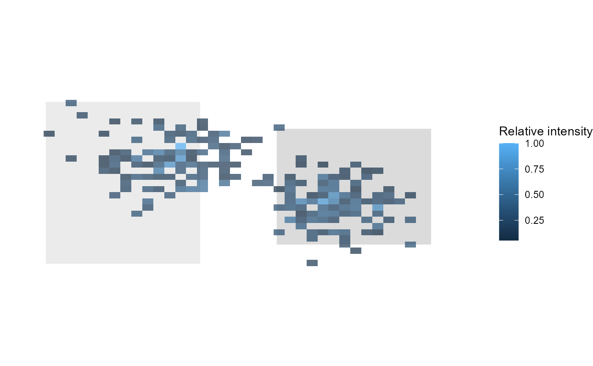

Heatmaps and spatial visualisation
Source:vignettes/articles/heatmap-spatial-visualisation.Rmd
heatmap-spatial-visualisation.RmdThis article gives compact examples for creating gaze and fixation heatmaps from Gazepoint-style coordinate data. The examples use synthetic data and are intended to demonstrate plotting behaviour rather than to evaluate visual attention.
Example data
set.seed(42)
n <- 250
gaze <- data.frame(
x = pmin(pmax(c(
stats::rnorm(n / 2, mean = 0.35, sd = 0.08),
stats::rnorm(n / 2, mean = 0.68, sd = 0.07)
), 0), 1),
y = pmin(pmax(c(
stats::rnorm(n / 2, mean = 0.42, sd = 0.08),
stats::rnorm(n / 2, mean = 0.58, sd = 0.07)
), 0), 1),
duration = stats::runif(n, min = 60, max = 350)
)
head(gaze)## x y duration
## 1 0.4596767 0.3323075 306.00503
## 2 0.3048241 0.4239240 78.19644
## 3 0.3790503 0.3241203 297.75508
## 4 0.4006290 0.4352015 216.41449
## 5 0.3823415 0.5238165 204.71583
## 6 0.3415100 0.3372901 66.44592Preparing heatmap data
prepared <- prepare_gazepoint_heatmap_data(
gaze,
x_col = "x",
y_col = "y",
weight_col = "duration",
display_width = 1280,
display_height = 720
)
head(prepared[, c(".gp3_x_px", ".gp3_y_px", ".gp3_weight")])## .gp3_x_px .gp3_y_px .gp3_weight
## 1 588.3861 239.2614 306.00503
## 2 390.1749 305.2253 78.19644
## 3 485.1843 233.3666 297.75508
## 4 512.8051 313.3451 216.41449
## 5 489.3971 377.1479 204.71583
## 6 437.1328 242.8489 66.44592Heatmap with raw points
plot_gazepoint_heatmap(
prepared,
bins = 45,
alpha = 0.80,
show_points = TRUE
)Background-image overlay
plot_gazepoint_heatmap_overlay() can place the heatmap
over a PNG stimulus image. The background-image helper uses the optional
png package.
if (requireNamespace("png", quietly = TRUE)) {
bg <- tempfile(fileext = ".png")
img <- array(1, dim = c(720, 1280, 3))
img[150:570, 120:520, ] <- 0.92
img[220:520, 720:1120, ] <- 0.86
png::writePNG(img, bg)
plot_gazepoint_heatmap_overlay(
gaze,
background_image = bg,
x_col = "x",
y_col = "y",
weight_col = "duration",
display_width = 1280,
display_height = 720,
bins = 45,
heatmap_alpha = 0.70
)
}
Exporting a heatmap
p <- plot_gazepoint_heatmap(
prepared,
bins = 45
)
export_gazepoint_heatmap_png(
p,
filename = "gazepoint_heatmap.png",
width = 8,
height = 5,
dpi = 300
)